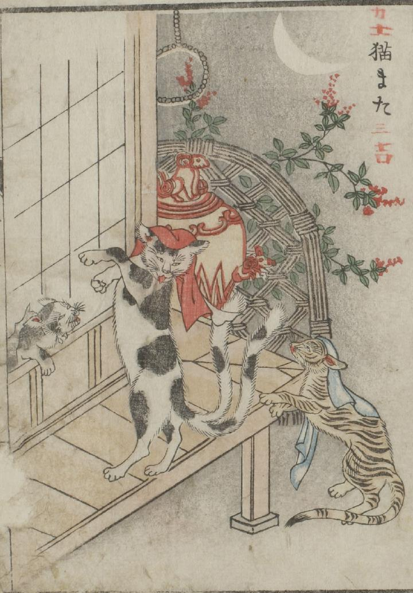

猫；ネコ

赤い手拭いを頭にのせ、尻尾が2つに分かれた猫またが、縁側に後ろ足で立っている。その様子を白い手拭いをかぶった虎猫がみている。さらに障子を破ってもう1匹の猫が上半身だけを外に出している。
出典：親書誌：U426_nichibunken_0051：怪物画本；カイブツエホン／日付：2006／資源識別子：U426_nichibunken_0051_0033_0000
Copyright (c)2010- International Research Center for Japanese Studies, Kyoto, Japan. All rights reserved.